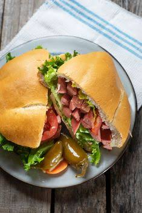

Milanesa
Home

This recipe is from an Argentinian Grandmother who lives in Buenos Aires
She used this ingredients to make it:
- ½ pound skinless, boneless chicken breast
- 1 ½ tablespoons cornstarch
- 1 egg
- ⅓ cup bread crumbs
- 2 tablespoons chopped fresh cilantro
- 1 teaspoon ground chipotle pepper
- 1 teaspoon dried Mexican oregano
- 1 teaspoon ground cumin
- ¼ teaspoon coarsely ground black pepper
- 2 bolillo rolls, sliced in half lengthwise
- 3 tablespoons mayonnaise
- 1 tablespoon hot sauce (such as Valentina®)
- 2 tablespoons sunflower seed oil
- ½ avocado, sliced
- 3 slices tomato
- 2 lettuce leaves
- 1 tablespoon pickled carrots
- 1 tablespoon pickled jalapeno peppers
Steps to make the recipe as the Argentinian Grandmother:
- Preheat the oven to 250 degrees F (120 degrees C).
- Seal chicken breast in a resealable zip-top plastic bag. Pound flat to 1/4-inch thickness. Add cornstarch and shake to coat.
- Whisk egg in a shallow bowl. Dredge chicken breast through egg; leave it in the bowl. Add bread crumbs, cilantro, chipotle, oregano, cumin, and pepper to the bag; shake well. Lift chicken from the bowl, letting any excess egg drip off. Add to bread crumb mixture. Shake and press seasoned bread crumbs over chicken breast.
- Place bolillo buns in the preheated oven until warmed through and toasted, about 12 minutes.
- Meanwhile, mix mayonnaise and hot sauce together in a small mixing bowl.
- Heat oil in a skillet over medium heat. Cook chicken until browned, about 6 minutes per side. An instant-read thermometer inserted into the center should read at least 165 degrees F (74 degrees C). Cut chicken in half, lengthwise.
- Assemble sandwiches. Spread spicy mayonnaise over both sides of the rolls. Add equal amounts of avocado, tomato, lettuce, carrots, and jalapeños to 2 halves. Add chicken and tops of rolls. Serve with remaining spicy mayonnaise for dipping.
Recipe From This Page